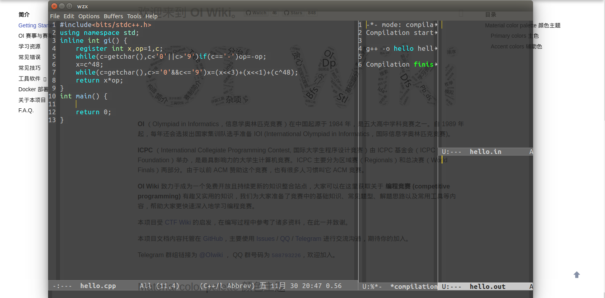

Emacs
本页面为 Emacs 的入门教程．
15 分钟入门 Emacs．
简介
Emacs 是一款非常容易上手的编辑器，只需要简短的几行配置就能使用，但是想要非常熟练地使用 Emacs 进行各项工作还是需要一定的时间．
作为入门教程，这里仅介绍 Emacs 的基本功能，以及较方便地用 Emacs 编写、调试代码的方法．
入门
命令
命令在 Emacs 中有很大的作用．
使用 Application 键^note1（Windows 系统下 Emacs 未指定这个键，需要手动设置）或者快捷键 M-x（Alt+x）可以打开命令输入，输入完按下回车可以执行命令．
通常使用 es 或者 eshell 命令来打开 Eshell（类似一个终端）．
输入命令通常可以用快捷键代替．
缓冲 (buffer)
缓冲即打开的文件和进程，在不保存的情况下，在缓冲中修改并不会修改到文件．
在缓冲区的底部点击缓冲的名字或者使用快捷键可以切换缓冲．
编译、调试和运行
编译和调试功能的入口在顶部菜单栏的 Tools 下拉栏．使用者也可以通过命令或者自定义快捷键使用编译和调试功能．
可以使用终端或 Eshell 运行程序．
按下 Tools 中的调试 (gud-gdb) 后，输入程序名（一般会自动输好，但如果中途将程序另存为或者打开了两个需要调试的程序，自动输好的文件名可能会有误）即可开始调试．
分屏
这个功能能让使用者同时查看各个缓冲的内容，而不需要来回切换缓冲，方便测试、调试代码．
分屏功能可以同时显示多个窗口，用鼠标拖动窗口的边缘可以缩放窗口．
几个快捷键：
- 删除分屏 "C-x 0"：将这个分屏删去
- 横向分屏 "C-x 3"：将这个分屏横向分成两半
- 纵向分屏 "C-x 2"：将这个分屏纵向分成两半
推荐的窗口布局为将窗口分为四块：先横向分，调整一块的宽度约为 3/4 屏，作为编辑窗口．将另一块横向分，一块作为调试和编译信息显示的窗口，另一块再纵向分，一块打开输入文件，一块打开输出文件．

快捷键
Emacs 拥有极为丰富的快捷键，可以大幅提高工作的效率．使用者可以在配置中自定义快捷键或者设置快捷键的映射．
由于快捷键过多，所以 Emacs 快捷键的使用与操作系统不同．
为了方便描述，做如下约定：
| 字符 | 键位 |
|---|---|
| C | Ctrl |
| M | Alt |
| ？ | 任意键位 |
一般有以下三种：
F?、ESC：直接按下对应的功能键．M-?、C-?、C-M-?：按下Alt或者Ctrl的同时按下?．? ?：先按下第一个?代表的键，松开再按下第二个?代表的键．
下面是一些常用的快捷键：
C-x h：全选C-x left、C-x right：切换到上/下一个缓冲C-x d：打开一个目录C-x C-f：打开一个文件（如果不存在文件则新建文件）
个性化
刚安装好的 Emacs 外观难看且不好使用，因此需要对其进行个性化设置．
由于配置不好记，所以部分可以直接设置的部分建议不要记配置．
直接设置
- Options：
Highlight Matching Parentheses高亮匹配括号 - Options：
Blink Cursor设置光标闪烁 - Options Show/Hide：
Tool Bar显示/不显示工具栏（默认显示，建议不显示） - Options：
Use CUA Keys勾选后可以使用 Ctrl + C,Ctrl + V 等快捷键进行复制粘贴 - Options Customize-Emacs：
Custom Theme选择配色方案，选择完后需要点击保存 - Options：
Save Options保存配置
配置
在 home 目录下显示隐藏文件（Windows 系统在 用户目录 的 AppData\Roaming 目录下），".emacs" 就是配置文件（如果没有说明之前没保存），打开修改即可．如果 Emacs 已打开，则需要重启 Emacs，配置才能生效．
考场推荐的配置如下．
;;设置一键编译 可以自行添加参数 难背考场不建议使用 不建议依赖一键编译
(defun compile-file ()(interactive)(compile (format "g++ -o %s %s -g -lm -Wall" (file-name-sans-extension (buffer-name))(buffer-name))))
(global-set-key [f9] 'compile-file)
;;;;设置编译快捷键（如果设置了一键编译不要与一键编译冲突）
;;(global-set-key [f9] 'compile)
(global-set-key (kbd "C-a") 'mark-whole-buffer) ;;全选快捷键
(global-set-key (kbd "C-z") 'undo) ;;撤销快捷键
(global-set-key [f10] 'gud-gdb) ;;GDB调试快捷键
(global-set-key (kbd "RET") 'newline-and-indent) ;;换行自动缩进
(global-set-key (kbd "C-s") 'save-buffer) ;;设置保存快捷键
(setq-default kill-ring-max 65535) ;;扩大可撤销记录
;;C++ 代码风格 一般控制缩进规则
;;;"bsd" 所有大括号换行
;;;"java" 所有大括号不换行．else 接在右大括号后面
;;;"awk" 只有命名空间旁、定义类、定义函数时的大括号换行．else 接在右大括号后面
;;;"linux" 只有命名空间旁、定义类、定义函数时的大括号换行．else 接在右大括号后面．一般来说，这个风格应该有 8 格的空格缩进
(setq-default c-default-style "awk")
??? note "完整配置" ```text ;;设置一键编译 (defun compile-file ()(interactive)(compile (format "g++ -o %s %s -g -lm -Wall" (file-name-sans-extension (buffer-name))(buffer-name)))) (global-set-key [f9] 'compile-file) ;;;;设置编译快捷键（如果设置了一键编译不要与一键编译冲突） ;;(global-set-key [f9] 'compile)
;;考场必备
(global-set-key (kbd "C-a") 'mark-whole-buffer) ;;全选快捷键
(global-set-key (kbd "C-z") 'undo) ;;撤销快捷键
(global-set-key [f10] 'gud-gdb) ;;GDB调试快捷键
(global-set-key (kbd "RET") 'newline-and-indent) ;;换行自动缩进
(global-set-key (kbd "C-s") 'save-buffer) ;;设置保存快捷键
(setq-default kill-ring-max 65535) ;;扩大可撤销记录
;;(define-key key-translation-map [apps] (kbd "M-x")) ;; windows 系统下设置命令快捷键
;;设置缩进
;;;C++ 代码缩进长度．
(setq-default c-basic-offset 4)
;;;使用 tab 缩进
(setq-default indent-tabs-mode t)
;;;tab 的长度．务必和缩进长度一致
(setq-default default-tab-width 4)
(setq-default tab-width 4)
;;设置默认编码环境
(set-language-environment "UTF-8")
(set-default-coding-systems 'utf-8)
;;不显示欢迎页面
(setq-default inhibit-startup-screen t)
;;设置标题
(setq-default frame-title-format "")
;;显示行号
(global-display-line-numbers-mode t)
;;高亮
(global-hl-line-mode 1);;高亮当前行
(show-paren-mode t);;高亮匹配括号
(global-font-lock-mode t);;语法高亮
;;允许emacs和外部其他程序的粘贴 好像默认允许
(setq-default x-select-enable-clipboard t)
;;设置字体是 Ubuntu Mono 的 16 号，如果字体不存在会报错
(set-face-attribute 'default nil :font "Ubuntu Mono-16")
;(set-face-attribute 'default nil :font "Consolas-16") ;; windows 系统请用这条
;;鼠标滚轮支持
(mouse-wheel-mode t)
;;设置光标形状为竖线（默认为方块）
(setq-default cursor-type 'bar)
;;回答 yes/no 改成回答 y/n
(fset 'yes-or-no-p 'y-or-n-p)
;;透明度
(set-frame-parameter (selected-frame) 'alpha (list 85 60))
(add-to-list 'default-frame-alist (cons 'alpha (list 85 60)))
;;减少页面滚动的行数，防止整页地滚动
(setq-default scroll-margin 3 scroll-conservatively 10000)
;;优化文件树结构
(ido-mode t)
;;配色方案
(setq default-frame-alist
'((vertical-scroll-bars)
(top . 25)
(left . 45)
(width . 120)
(height . 40)
(background-color . "grey15")
(foreground-color . "grey")
(cursor-color . "gold1")
(mouse-color . "gold1")
(tool-bar-lines . 0)
(menu-bar-lines . 1)
(scroll-bar-lines . 0)
(right-fringe)
(left-fringe)))
(set-face-background 'highlight "gray5")
(set-face-foreground 'region "cyan")
(set-face-background 'region "blue")
(set-face-foreground 'secondary-selection "skyblue")
(set-face-background 'secondary-selection "darkblue")
(set-cursor-color "wheat")
(set-mouse-color "wheat")
(custom-set-variables
'(ansi-color-faces-vector
[default default default italic underline success warning error])
;;启动 Ctrl-x Ctrl-c Ctrl-v = 剪切 复制 粘贴
'(cua-mode t nil (cua-base))
'(show-paren-mode t)
;;隐藏工具栏
'(tool-bar-mode nil))
;;关闭光标闪烁
'(blink-cursor-mode nil)
(custom-set-faces)
```
拓展阅读
要以终端模式启动 Emacs，在启动时添加参数 -nw．Emacs 有多种变体，如采用 native-comp 来减少延迟的 GCC Emacs 及其纯 GTK 版本变体、针对 macOS 优化的 Emacs Macport．
Emacs 有中心化的软件仓库，配置后可通过 M-x package-install 来安装插件．使用 镜像站 可以加快下载速度．
Emacs 可以使用语言服务器（Language Server Protocol）来提高编辑体验，目前推荐的 C++ 后端是 Clangd．前端可以采用 Eglot 或 Emacs LSP，参阅 此条目 可能对选择前端有所帮助．
拓展名为 .org 的 Org Mode 文档可以通过 Pandoc 转换为 Markdown 文档．